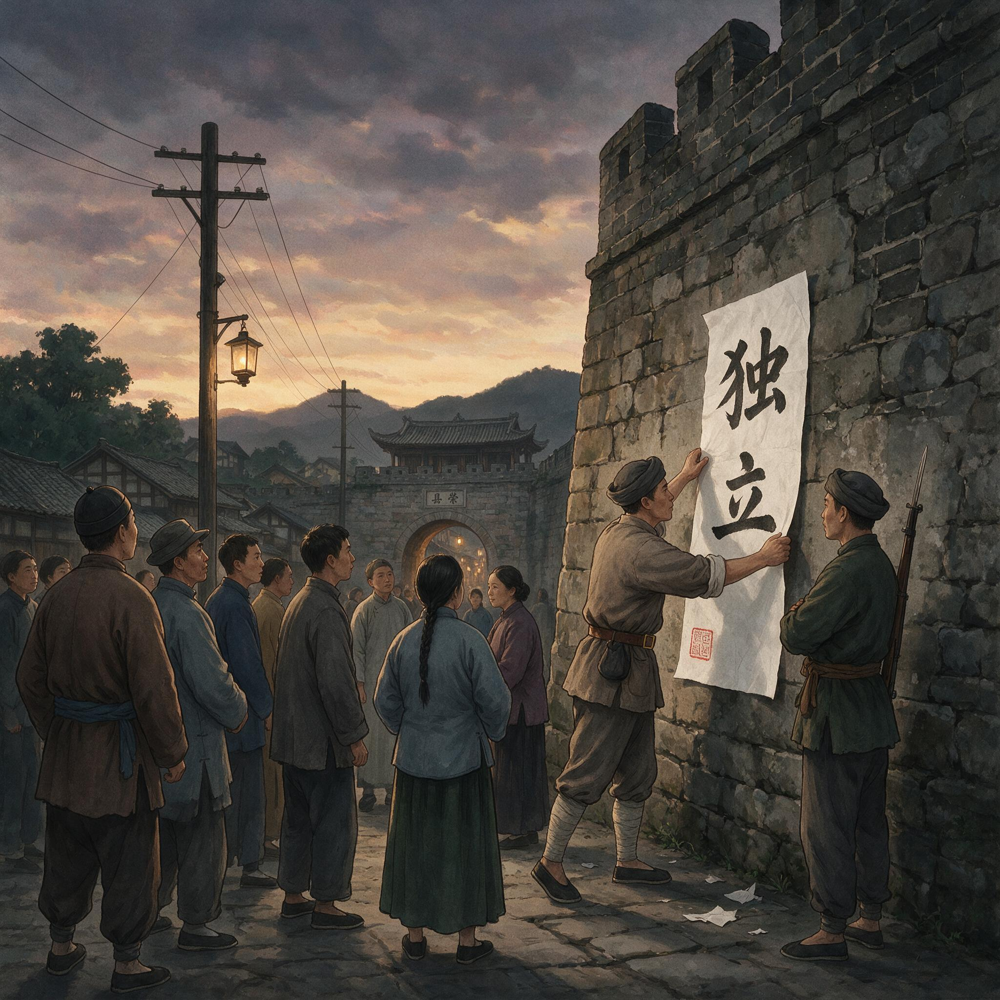

第 15 章
荣县独立：第一个县级政权的诞生
安民告示的纸张很薄，墨迹透过纸背，在靛蓝色的暮光里显得发虚。贴告示的人是个三十来岁的团丁，左手拎一桶浆糊，右手拿一把棕刷，动作熟练得像贴了几十年官府告示——事实上他也确实贴过不少。

荣县独立安民告示张贴瞬间
AI 生成插图，非史实影像。
只不过从前他贴的是县衙门发下来的催粮告示、禁赌告示、通缉告示，落款处盖的是正堂大印。眼前这张告示的落款处没有大印，只有一行墨书小字：荣县军政府军政长吴。
团丁贴完最后一张，退后两步看了看，确认纸张四角都粘牢了，这才拎起浆糊桶往东街走。
他路过一家茶馆门口时，掌柜正站在条凳上往门楣贴白纸。白纸上只有四个字：保路安民。这是成都罢市时传过来的规矩，荣县人已经贴了两个月。
团丁看了那白纸一眼，没说话，继续往前走。这张告示贴出的日期，依照后来民国初年报章与1929年《荣县志》的核定，是1911年10月29日。但在荣县人的记忆里，一切早在九月二十五日那天就已经变了。那天下午，县城东街的城隍庙前聚集了上千人，同盟会员吴玉章站在戏台上说话。
他说的话不长，大意是清廷既已失信于民，川人便不必再等一纸诏书；荣县从今日起脱离清廷管辖，一切军政民政由本县人自行议定。台下有人鼓掌，有人沉默，有人交头接耳。但没有人站出来反对。
这不是因为荣县人全都赞同革命。恰恰相反，那天站在台下的人群里，大多数人并不清楚“脱离清廷”究竟意味着什么。他们来城隍庙，是因为保路同志军进城之后，城里的头面人物挨家挨户传话：凡家有男丁者，午后到东街议事。他们来议事，不是来革命。
但革命就是这样发生的——当一群人聚集在一起，而旧权威不再能维持秩序时，新的权威便从人群中生长出来。
荣县的旧权威在九月二十五日之前就已经瓦解了。知县早在八月底便称病不出，县衙里的差役散去大半，剩下的几个每日照常点卯，却无事可办。成都血案的消息传来后，荣县的团练局和袍哥码头迅速接管了城门、粮仓和盐局。他们打的旗号是“保路安民”，但实际上做的事情远比这四个字复杂：拦截过境的清军溃兵、扣押县库的银两、设立路卡收取过境费。
这些事情没有一件是合法的，但也没有人敢说它们不合法——因为那个能定义“合法”的权威本身已经不在了。
吴玉章回到荣县的时间是九月二十三日。他不是荣县人，他的老家在荣县西北的荣昌，但他与荣县的袍哥首领龚泽生有旧交。龚泽生是荣县码头的大爷，手下有三四百号人，控制了县城大半的粮行和盐号。八月底同志军起事时，龚泽生拉起了队伍，自封“保路义勇”，实际上就是把他手下的袍哥弟兄换了个名头。
吴玉章到荣县时，龚泽生正在县衙大堂里喝茶——知县跑了之后，他便搬了把太师椅坐在大堂上，倒不是要坐堂问案，只是觉得这地方敞亮、凉快。
吴玉章对龚泽生说，保路的文章已经做完了。成都那边蒲殿俊、罗纶被赵尔丰抓了之后，保路同志会的旗号便再难号令全省；眼下各州县的同志军各自为战，打的是保路的旗，行的是割据之实。与其这样名实不符地耗下去，不如干脆打出独立的旗号，把荣县建成一个革命基地。
龚泽生听完，没有立刻回答。他叫人给吴玉章倒了杯茶，自己端着盖碗慢慢啜了两口，才问了一句话：“独立了之后，粮税怎么收？”
这个问题比任何革命纲领都更实际。龚泽生手下的三四百号人要吃饭，要发饷——虽然“饷”这个字用在袍哥队伍身上并不准确，他们不领军饷，但码头要维持运转，就得有钱。此前两个月的经费来源主要有两块：一是县库里的存银，二是向城中富户摊派的“保路捐”。但县库存银有限，保路捐也不可能一直摊下去。龚泽生需要知道，一旦打出独立的旗号，钱从哪里来。
吴玉章的回答是：沿用旧制。他提议荣县军政府暂不更动田赋征收办法，仍照原来的地丁银额度征收，只是在征收主体上做变更——从前是县衙代朝廷征收，今后是军政府以本县名义征收。
这个回答让龚泽生放下了心。他担心的不是革命本身，而是革命会不会搅乱现有的利益格局。吴玉章的表态告诉他：不会。至少在粮税这件事上，一切照旧。
但另一群人比龚泽生更难说服。九月二十四日上午，吴玉章在城隍庙的厢房里见了荣县的几位乡绅。领头的是前清举人刘光烈，六十多岁，在荣县算得上首屈一指的士绅。刘光烈名下的田产有两百多亩，在县城还有三家铺面。
保路运动初起时，他是荣县股东分会的副会长，带头捐过款，也写过请愿书。但那是保路，不是造反。保路是维护股东的合法权益，是向朝廷陈情；造反是另立政权，是与朝廷决裂。这两者之间的界限，刘光烈比任何人都分得清楚。厢房里的谈话持续了两个时辰。刘光烈反复问的是同一个问题：军政府成立之后，谁来保证秩序？他所说的秩序，不是抽象的社会秩序，而是非常具体的几件事：田契还算不算数？商铺还能不能正常营业？团练的枪支归谁管？吴玉章逐一回答：田契照旧有效；商铺照常营业；团练改编为军政府民团，仍由本地人统带。刘光烈听完，沉默了很久。最后他说了一句话：“既如此，老夫便不反对。”
这句话不是赞成，而是一种有保留的默许。刘光烈不反对的原因不是他认同革命纲领，而是他判断清廷在四川的统治已经无法恢复。他之所以愿意接受军政府这个新框架，是因为吴玉章承诺这个框架不会触动他的田产和铺面。这是一种交易：地方精英以承认新政权的合法性为代价，换取既有财产秩序的延续。
九月二十五日下午的民众大会，就是在这样的背景下召开的。吴玉章站在戏台上宣布荣县独立时，台下的龚泽生和他的袍哥弟兄站在左边，刘光烈和他的乡绅同僚站在右边。鼓掌最响的是站在中间的那些人——城里的手工业者、店铺伙计、年轻学生。他们鼓掌不是因为看懂了革命前途，而是因为这两个月来荣县城里实在太乱了，任何一个声称能恢复秩序的人都会得到掌声。
大会结束后，吴玉章、龚泽生、刘光烈和另外几个人走进县衙大堂，开始商议军政府的具体组建事宜。这场商议才是荣县独立真正的产床。第一个要解决的问题是人事。谁来当这个军政长？龚泽生推举吴玉章。
他的理由很简单：吴玉章是同盟会的人，和省城、外省都有联系，打出独立旗号之后需要对外交涉，这事只有吴玉章能做。刘光烈没有反对。他本来就不想出头——军政府能不能站住脚还是未知数，万一清军打回来，领头的人头一个掉脑袋。吴玉章推辞了两句，最终接受了。
但军政长之下的人事安排就复杂得多了。龚泽生要求他的副手王子清出任民团总办，掌握全县武装。刘光烈则提名自己的侄子刘树勋出任财政科长，理由是田赋征收需要熟悉本地账目的人。吴玉章对此没有异议——他手里没有自己的人马，军政长这个头衔要想落到实处，就必须依靠龚泽生的枪和刘光烈的钱。
第二个问题是粮税征收办法。吴玉章提议仍照旧额征收地丁银，但附加一项“保境捐”，每亩加收银五分，用于军政府日常开支和民团军饷。刘光烈对这个附加捐颇有微词——他名下的田产最多，加征一分他就多出一分。但他最终没有反对，因为他算了一笔账：清廷的铁路租股每亩每年要缴银三钱到五钱不等（按田赋3%折算），军政府的附加捐只有五分，两相比较，负担反而轻了。
更重要的是，军政府承诺免除租股——这是保路运动的核心诉求，也是最能争取中小农户支持的筹码。
第三个问题是接管县库。当天傍晚，吴玉章、刘树勋和两名团丁打开了县衙后堂的银库。库房里还有存银一千二百余两，铜钱三百余串，另有仓粮约二百石。刘树勋当场造册登记，一式三份，军政长、财政科、民团各存一份。这份清单后来被收进了荣县军政府的第一卷档案里，墨迹工整，数目清晰。它标志着荣县的公共财政从清廷的州县体系转移到了一个地方自治政权的名下。
第四个问题是发布安民告示。告示的草稿是刘光烈拟的，用的是典雅的骈文，开篇便是“照得天命靡常，民心有向”。吴玉章看了之后说，这样的文字老百姓看不懂。他另拟了一份白话告示，全文不过两百字：
“为通告事：照得清廷失政，失信于民。川汉铁路收归国有，名为官办，实为外债抵押。我川人节衣缩食所集股本，一旦化为乌有。成都赵督不恤民情，擅捕绅商，枪杀请愿百姓。是可忍孰不可忍。今我荣县士农工商各界公议，自即日起脱离清廷管辖，组织荣县军政府，办理本县军政民政。所有田赋税课暂照旧章征收，租股一项即行免除。凡我商民各安生业，毋得惊扰。如有造谣惑众、乘机劫掠者，以军法从事。特此通告。”
这份告示没有一句革命口号。“驱逐满清、建立民国”这八个字只在吴玉章当天的大会演说中出现过，没有写进告示里。告示强调的是两件事：免除租股和维持秩序。前者是对中小农户和商铺主的让利，后者是对有产者的承诺。荣县独立的革命性被包裹在一层地方自治的保守外壳之中。
告示贴出后的头三天，荣县城里几乎没有发生任何戏剧性的事件。店铺照常开门，茶馆照常营业，城隍庙前的菜市场照常开市。唯一可见的变化是城门换了一面旗——原来插在城门楼上的黄龙旗被取下来，换上了一面白布旗，上面写着一个“汉”字。这面旗做得粗糙，布是临时从布庄扯来的白粗布，“汉”字是吴玉章自己用毛笔写的，墨迹被雨水洇过之后有些模糊。
但变化在看不见的地方悄然发生。军政府成立的第二天，龚泽生的民团便开始在四乡收缴散落的枪支。八月间同志军起事时，不少农户从溃兵手里捡到了快枪和子弹，有的藏在草垛里，有的埋在菜地里。民团挨村通知：凡持有枪支者限三日内到团局登记；逾期不登记者以私藏军火论处。
这道命令的背后逻辑很清楚：新政权的武装力量必须垄断暴力。旧政权之所以瓦解，正是因为它失去了对暴力的独占——同志军的兴起本身就是民间武装对官方暴力的挑战。军政府要避免重蹈覆辙，就必须把散落在民间的枪支重新集中起来。
刘树勋的财政科开始清理县衙留下的田赋底册。这项工作比预想的困难得多。底册年久失修，许多田地的实际所有者与册载姓名已经对不上号——有的田产转卖了三手却没有过户，有的农户逃亡后田地荒芜却仍挂在原主名下。刘树勋花了整整十天时间才理出一个大致头绪。他发现荣县全县在册田地约十二万三千亩，年征地丁银约四千两。这个数字比十年前少了将近一成——减少的部分主要是因灾荒和逃亡而抛荒的田地。
军政府免除租股之后，每亩地的负担确实减轻了，但新政权能否靠每年四千两的地丁银和附加的保境捐维持运转，仍是一个未知数。这些琐碎的行政事务——收缴枪支、清理底册、登记仓粮——构成了荣县独立的主体内容。
它们不如民众大会那样具有戏剧性，不如安民告示那样具有象征意义，但正是这些事务把“独立”从一个政治口号变成了一套可操作的治理行为。荣县军政府之所以能在成立后的几周内站稳脚跟，不是因为它的革命纲领多么动人，而是因为它成功接管了旧政权的财政、武装和户籍管理职能——尽管接管的质量参差不齐。
在这个过程中，同盟会的革命话语扮演了一个微妙的角色。吴玉章在大会上的演说、城门上那面写有“汉”字的白旗、告示中“脱离清廷管辖”的措辞——这些符号为军政府提供了一套合法性叙事。但这套叙事并不是军政府运作的实际动力。真正推动荣县走向独立的力量来自更具体的利益计算：龚泽生需要合法的名义来巩固他对地方武装的控制；刘光烈需要稳定的秩序来保护他的田产；城里的商贩需要免除租股来减轻负担；乡下的农户需要有人来维持治安以免受溃兵骚扰。
革命的旗帜之所以能插在荣县城头，是因为它恰好覆盖了这些各不相同的诉求。九月二十五日之后的两周内，荣县周边的几个州县相继发生了类似的变化。
威远县在九月二十八日成立了军政分府，主持者是当地袍哥首领与一名从成都返乡的学生。富顺县在十月初三驱逐了知县，由县商会和团练局联合组成临时维持会。井研县的同志军首领则在十月初五宣布“暂代县政”。
这些政权各有名目：有的叫军政府，有的叫军政分府，有的叫维持会；有的打出了“汉”字旗，有的仍用黄龙旗；有的明确宣称脱离清廷，有的只含糊地表示“维持地方以待大局”。但它们有一个共同特征：都是以本地绅商和袍哥势力为骨架，以革命话语或保路诉求为合法性外衣，以团练武装为后盾。
这个模式的可复制性在于它不需要太多的外部资源。一个县要独立，不需要等待省城或中央的命令——恰恰相反，它需要的是旧权威的真空；不需要一支强大的正规军——只需要本地的团练或袍哥武装足以维持秩序；不需要一套完整的意识形态——只需要一个能同时安抚有产者和动员无产者的口号。“保路”曾经是这样的口号，“革命”也是。
它们在不同的时间、不同的地点被不同的人使用，但其功能是相同的：为地方精英脱离中央控制提供一套说得通的理由。十月下旬，当端方率领的湖北新军仍在资州一带进退维谷时——那些湖北籍士兵的家乡已经落入革命军之手（武昌起义已于10月10日爆发），部队随时可能发生哗变或要求返鄂——川南已经出现了至少六个效仿荣县的县级政权。这些政权之间没有统一的指挥系统，没有一致的政纲，甚至彼此之间还存在地盘纠纷——威远和荣县的民团就曾为争夺一口盐井的控制权剑拔弩张。但它们的存在本身已经改变了四川的政治格局。
赵尔丰在成都所能控制的区域正在急剧缩小：北路的绵竹、安县仍在省城号令之下；东路的重庆府尚能维持旧制；但南路和西路的大片州县已经脱离了成都的行政轨道。
清廷在四川的基层统治体系不是被一场决战摧毁的。它是在几个月的时间里被数十个县级政权一块一块地拆解掉的。每一个县的独立都像在一片布上剪出一个小洞；
单独看每个洞都不大，但当洞的数量足够多、分布足够密时，整片布便再也无法维持原状。回到荣县那张安民告示。十月二十九日贴出的告示与九月二十五日的版本相比只有一处改动：落款从“军政长吴”变成了“荣县军政府”。
这处改动很小，但它反映了一个实质性的变化：政权的主体不再是某个人，而是一个机构。尽管这个机构还很粗糙——它的财政科只有三个人、民团总办设在原来的团练局公房里、军政长的办公桌就是县衙大堂上的那张旧案桌——但它已经具备了最基本的行政能力：收税、维持治安、发布政令。
告示贴在城隍庙外的砖墙上，旁边是一张更早贴上去的白纸帖,“保路安民”四个字已经被雨水冲得有些模糊。两张纸并排贴着：一张代表已经结束的保路运动，一张代表刚刚开始的政权建设。路过的人大多不会注意它们之间的区别——在他们看来，这都是乱世里维持秩序的手段。
但历史的分野就藏在这两张薄纸之间：保路运动是一场抗议，它的目标是阻止朝廷做某件事；独立是一场重构，它的目标是建立一套新的权力体系。
团丁贴完告示往回走的时候，东街上的铺子正在陆续上门板。德盛祥盐号的伙计把最后一块门板嵌进槽里，留了一扇小门供人进出。盐号掌柜姓周，五十来岁，坐在柜台后面扒拉算盘，见团丁路过便招呼了一声，问他告示上写的什么。团丁把浆糊桶搁在地上，从怀里摸出一张揉得有些发皱的告示底稿递过去。周掌柜凑到油灯底下看了半晌，抬头问了一句：“租股真免了？”团丁说告示上写着呢，免了。周掌柜又低头看了一遍，手指顺着墨字一行一行地移，最后停在“租股一项即行免除”那八个字上，用指节敲了敲柜台，说了一句话：“那这一年能省下四钱银子。”
四钱银子在荣县意味着什么，周掌柜比任何人都清楚。他开盐号，也种地——城外的十二亩水田是他岳父的陪嫁，每年要缴租股银大约四钱二分。这笔钱在丰年不算太重，但今年不是丰年。七月里沱江涨水，淹了沿河的低田，秋粮减了至少三成。租股照缴的话，周掌柜就得从盐号的流水里挪银子去填田赋的窟窿。现在军政府说免了，他就能把这四钱银子留在账上。周掌柜把告示底稿还给团丁，转身从柜台上拿起一包盐，塞进团丁手里，说拿回去给家里人尝尝。团丁推了两下，收了。
这不是贿赂，这是荣县人的行事方式——你给了我一个准信，我请你吃一包盐。在这座县城里，消息和盐一样，都是硬通货。团丁走后，周掌柜重新拨了一遍算盘。他把明年的田赋、盐税、保境捐一项一项列出来，算了两遍，发现总负担确实比宣统二年少了将近两成。这个数字让他觉得军政府或许不是坏事。但他没有把这个判断说出口——茶馆里人多嘴杂，谁知道明天成都那边会不会派兵打回来。他把算盘归位，吹灭油灯，从小门钻出去，回后院睡觉。这一夜荣县城里像周掌柜这样拨过算盘的人不在少数。每个人都在算同一笔账：旧朝廷和新政权，哪个更划算。
但算账的方式因人而异。对于龚泽生来说，账本上的科目不是田赋和租股，而是人和枪。九月二十六日上午，也就是民众大会的第二天，龚泽生把民团的中队长召集到码头议事堂里，开了一个实打实的编伍会。参加会议的一共七个人，除了龚泽生和王子清，还有五个中队长，每人管着六七十号弟兄。龚泽生坐在正中的太师椅上，面前摆了一张从县衙拿来的荣县舆图。他用手指点着地图上的四个城门和八个乡场，一个一个地分配防区。北门归第一中队，南门归第二中队，东门和县衙归第三中队，西门和盐局归第四中队，第五中队作为机动队驻扎在城隍庙，随时支援各处。王子清负责统带全团，直接向龚泽生报告。
这个安排看起来是在布防，实际上是在分权。五个中队长里，有三个是龚泽生码头上的人，另外两个是从其他袍哥堂口拉过来的。龚泽生把最要紧的东门和县衙交给了自己的嫡系第三中队，把盐局——那是油水最厚的地方——交给了第四中队，第四中队的中队长姓唐，是王子清的表弟。王子清本人虽然是民团总办，但他手下没有直接掌握的队伍，他的权力来自于龚泽生的授权。龚泽生用这种办法确保了一件事：枪杆子永远姓龚。
但枪杆子姓龚是有代价的。五个中队的日常开销、弟兄们的伙食、枪支弹药的补充，这些都需要钱。龚泽生在编伍会上算了一笔粗账：全团三百六十人，每人每天伙食费三分银子，一天就是十两八钱，一个月三百二十多两。加上弹药损耗、服装添置、伤病抚恤，一个月少说要五百两银子。军政府每年地丁银收入不过四千两，平均下来一个月三百多两，连民团的伙食费都不够。
缺口怎么补？龚泽生的办法是老办法：设卡收费。他在荣县通往自流井的官道上设了两个卡子，对过往的盐商收取“护商费”——每驮盐抽银一钱。自流井是川南最大的盐产地，荣县是井盐出川的必经之路，这条路上的盐驮子每天少则二三十驮，多则五六十驮，一个月能收上百两银子。这笔钱不入军政府的公账，直接进民团的私账，由王子清掌管。吴玉章知道这件事，但他没有过问。不是不想问，是不能问。军政长这个头衔是靠龚泽生的枪撑着的，一旦在钱的问题上翻了脸，军政府连一个星期都撑不下去。吴玉章的选择是睁一只眼闭一只眼，把精力放在他能做的事情上：对外联络。
九月二十七日，吴玉章写了一封信给成都的同盟会机关。信的内容很短，大意是荣县已于九月二十五日宣布独立，成立军政府，请省城方面予以承认并通报各州县同志。这封信没有走官道——官道上的驿站已经瘫痪了两个月——而是托一个去成都贩布的荣县商人带去的。信送到成都时已经是十月初，收信人打开一看，信纸被汗浸得字迹模糊，但“荣县独立”四个字还看得清。这封信后来被同盟会机关转发给了重庆、泸州、叙府等地的分支机构，成为川南各县相继举事的催化剂之一。
但信使带回来的不只是同盟会的回函。十月初五，那个贩布的商人从成都返回荣县，带回来一个消息：端方率领的湖北新军已经过了重庆，正在向西推进，前锋已抵资州（端方本人于10月13日前后抵达重庆）。这个消息在荣县军政府内部引起了一阵不小的震动。龚泽生的第一反应是加强城防——他命令王子清在城墙上加派双岗，夜间巡逻从两班增加到四班。刘光烈的反应更复杂。
他私下里找吴玉章谈了一次，问了一个很直接的问题：如果端方的大军真的打到荣县，军政府守得住吗？吴玉章的回答是：端方不会来。他的判断依据有两条：第一，端方的目标是成都，荣县不在鄂军的行军路线上；第二，湖北新军内部不稳（武昌起义消息已传入），端方未必能把这支队伍带到成都城下。刘光烈听完，没有表示信服，但也没有继续追问。他只是说了一句：“但愿如此。”
这句“但愿如此”背后藏着刘光烈的真实处境。他是荣县少数几个公开表态支持军政府的士绅之一。虽然他的“支持”始终带着保留和算计，但在外人看来，他已经和军政府绑在了一起。
从抗议到重构的这一步跨越，不是由宏大的革命理论完成的，而是由龚泽生的兵力计算、刘光烈的田产考量、吴玉章的同盟会人脉和荣县城里上千名普通人的观望与参与共同完成的。十月底的川南已经开始转凉。
清晨的雾气从沱江方向漫过来时会把城门楼上的白布旗打得湿透。那面写有“汉”字的旗子在雾气里若隐若现，像一个尚未完成的承诺——承诺的内容并不清晰，但它已经在川南的土地上扎下了根，并且正在以一种无人能完全掌控的方式向更多的县城蔓延扩散。
威远、富顺、井研只是最先被波及的几个名字，在它们之后还有更多的名字正在加入这个名单，而每一个名字的加入都意味着清帝国在四川的统治根基又被挖掉了一块。荣县那张薄薄的安民告示，从城隍庙外的砖墙上开始，正在变成一种模式，一种可以在任何一座川南县城里复制的模板。
它不需要大军，不需要巨款，不需要英雄，只需要一个旧权威瓦解后的真空，一群愿意在新的框架下保护自身利益的地方精英，和一个能让各方都觉得自己没有输的口号。
当端方在资州对着电报抄件束手无策的时候（他所率湖北新军中的革命组织活动和反清倾向已逐渐公开化），当赵尔丰在成都督署里批阅越来越令人绝望的军报的时候（成都行政体系已彻底瘫痪），荣县模式已经像秋雾一样在川南的河谷和平坝间无声地蔓延开来，它所到之处，清帝国的基层统治便像被露水浸透的纸窗一样，一捅即破。